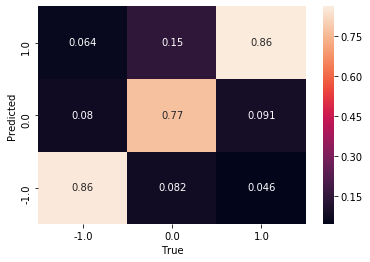

Emotsioonid Eesti meediamaastikul poliitika lõikes
Loon siia lühikese ülevaate Eesti meediamaastikust poliikute ja erakondade lõikes kajastuse positiivsuse järgi, kus igal graafikul ja tabelis vastab 1 positiivsele kajastusele, -1 negatiivsele kajastusele ja 0 neutraalsele kajastusele.
Kajastuse positiivsus on leitud modifitseeritud BERTi mudeliga, mille treeningandmestik on kokku pandud kolmest erinevast andmestikust:
- EKI valentsikorpus, n = 4300
- Eestikeelsed raamatute hinnangud, n = 20000
- Internetist kogutud solvangute ja komplimentide listid, n = 1000
Mudeli täpsus on 84%, s.t. et 84% mudeli määratud kategooriatest on õigesti määratud. Skoor on saadud testandmestikust, mida ei ole treenimisel kasutatud. Testandmestiku suurus on 10% koguandmestikust. Mudel määratleb korrektselt negatiivseid ja positiivseid tekste, kuid satub kohati hätta neutraalsetega, mistõttu on neutraalsete tekstide skoor 77%
NB! See leht ja siinsed andmed on varajases arendamisjärgus, mistõttu on vale hetkel saadaolevast informatsioonist lõplikke järeldusi teha.
Poliitikud
Siinsetes graafikutes on kasutatud artikleid, milles on 3 või rohkem lõiku. Poliitikute graafikud on järjestatud artiklite hulga järgi.
Uudislood


Arvamusartiklid


Jaak Kivi